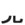

| KEN |
|
I looked with my eye as rats gnawed off KENny's little human legs. |
| ( を ) み*る |
to look, to see
★★★★★ |
| ( を ) み＊せる |
show something to someone
★★★★★ |
| ( が or に ) み＊える |
be able to see. As in, "Can you see that bird in the distance?"
★★★★★ |
| み＊せびらかす |
to show off. This is not an offensive term - you can even say it about yourself, "I'd like to show off my new boyfriend!"
★☆☆☆☆ |
| 意見 | |
| 見付ける |
find
★★★★☆
1/2 KANA
find (your car keys that you thought you'd lost)ー BOOBOO: you don't use 見つける about things you're discovering for the first time. That's 発見 (はっけん）! |
| 花見 |
sakura-viewing party
★★★☆☆
KUNKUN
cherry-blossom looking-at-and-getting-bombed parties |
| Meaning | Hint | Radical | |
|---|---|---|---|
| 貝 | shellfish | ANIMAL LEGS |  |
| 見 | look | HUMAN LEGS |  |
Money has ANIMAL LEGS because a shellfish is an animal.
Look has HUMAN LEGS because you're a human and you look at shit.
|
appearance
容姿 外見 見た目 外観 容貌 |
|
dump
見捨てる 振る |
|
great, magnificent
上手 うまい 素敵 立派 素晴らしい 見事 |
|
guard
警備 監視 見張り |
|
idly, stand by
見兼ねてxxx 見殺し 勘弁出来ない たまるか |
|
interpretation
感想 意見 印象 解釈 |
|
judge someone
偏見 判断 先入観 判決 裁く 審査 |
|
overlook
見過ごす 大目に見る |
|
point of view
立場 見方 味方 世界観 彼にして見ればxxx |
|
see
見る 観る |
|
show off
見栄を張る 見せびらかす |
|
show, indicate
見せる 示す |
|
summit
頂点 見所 頂上 山頂 天辺 頂 |
|
to look or stare
チラ見する じっと見る にらむ 見つめる 眺める |
 KANJIDAMAGE
KANJIDAMAGE